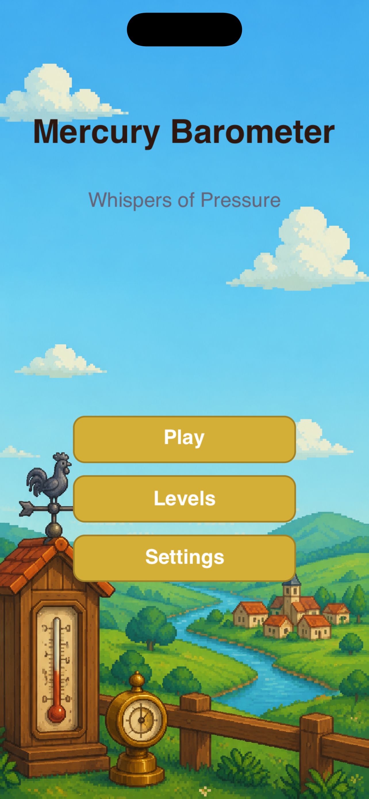
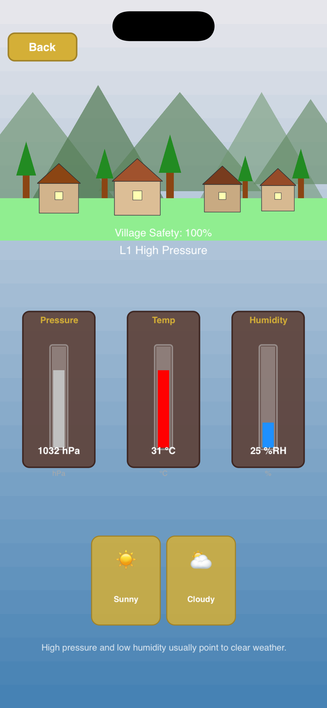
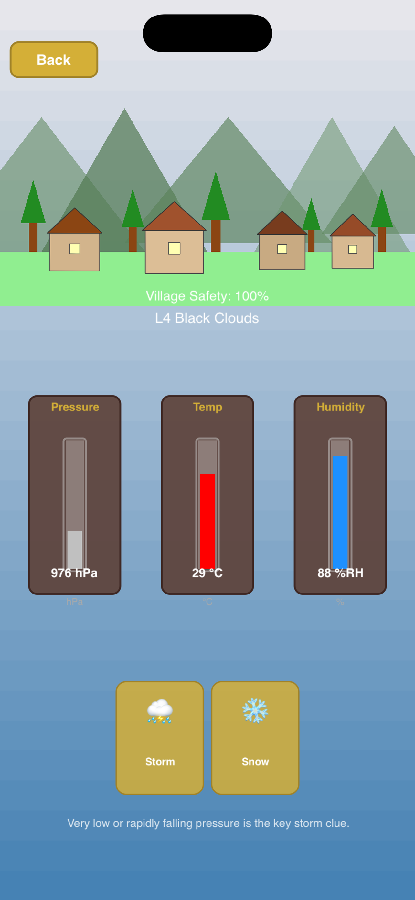
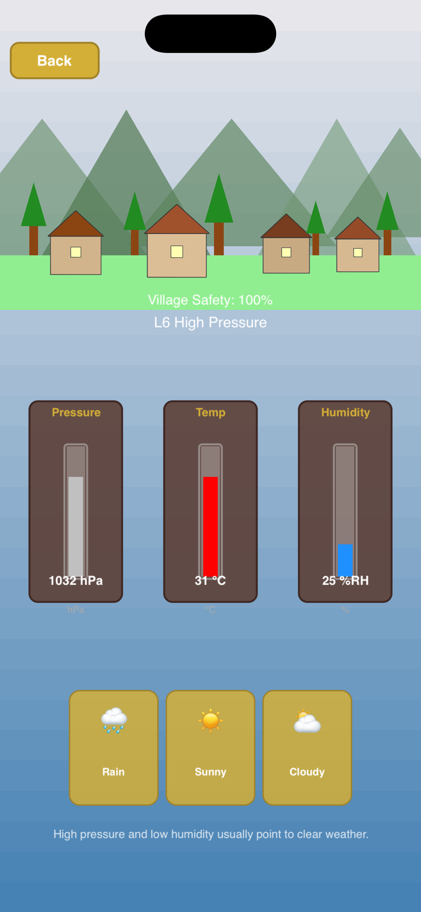
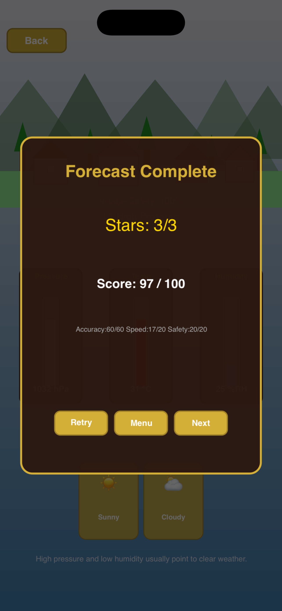

Whispers of Pressure
A weather forecasting simulation. Read three classical instruments — barometer, thermometer, hygrometer — and predict the weather to protect your village.

Start forecasting, choose a station, or adjust settings.

Watch the gauges fill, then tap a weather prediction.

Five weather types: sunny, cloudy, rainy, storm, snowy.

Predict several days in a row for a combined score.

Earn up to three stars based on accuracy, speed, and safety.
Mercury Barometer is an offline weather forecasting simulation built with SpriteKit. You play as a village weather observer stationed at historic observation posts across the world, reading classical mercury instruments to predict the next day's weather and keep your village safe from storms.
Three instruments, five weather types, fifty contracts across five atmospheric observation stations. Read the pressure, temperature, and humidity, infer the incoming weather, and protect the village health bar.
Each day the barometer, thermometer, and hygrometer fill to new readings. Watch the needle settle.
Combine the three readings with the on-screen hint to decide between sunny, cloudy, rainy, storm, or snowy.
Tap one of the five weather buttons at the bottom. Correct predictions keep the village safe; wrong ones cost 20% safety.
Levels 9, 20, 35, and 50 are multi-day contracts (3 or 5 days). Predict each day in sequence for a combined score.
Score combines accuracy (60), speed (20), and village safety (20). Three stars require 80 or higher.
50 contracts span five stations, each hiding more instruments and offering more weather options.
Read the three instruments, pick the matching weather button. Wrong predictions cost village safety.
No. Mercury Barometer is fully offline. No accounts, no ads, no tracking.
Visit the App Store product page for support contact after release.
| Genre | Games / Simulation |
| Compatibility | iOS 15.0 or later |
| Device Support | iPhone only |
| Age Rating | 4+ |
| Version | 1.0 |
| Language | English |
| Privacy | No data collected |
| Bundle ID | com.rosewood.mercurybarometer.game |